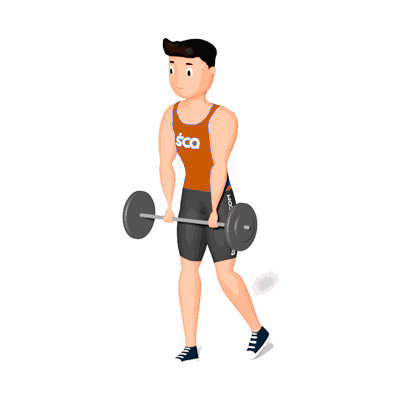

Levantamento Terra Unilateral

É um exercício de dominância de quadril para ganho de força e estabilidade no corpo como um todo, mas principalmente em membros inferiores, pois exige bastante ativação de isquiotibiais, glúteo e a estabilização do arco plantar.
Ficha Técnica
Tipo: Musculação
Grupo Muscular: Glúteo
Aparelho: Nenhum
Músculos: Nenhum
Como realizar
- Posicione-se em pé com os pés aproximadamente alinhados com os ombros;
- Segure uma barra com os braços totalmente estendidos em direção ao chão, com as mãos afastadas na largura dos ombros e as palmas voltadas para as coxas;
- Enquanto levanta um pé a poucos centímetros do chão e o leva para trás, flexione ligeiramente o joelho da perna de apoio;
- Empurre os quadris para trás e flexione-se na altura da cintura para abaixar o tronco em direção ao chão, enquanto a perna de trás acompanha o movimento para ajudar no equilíbrio;
- Empurre seu tórax para fora, abaixando o máximo que puder sem curvar a coluna lombar;
- Deixe os pesos tocarem o chão, faça uma pausa e depois contraia os glúteos, retornando à posição inicial.
 RC STORE
RC STORE